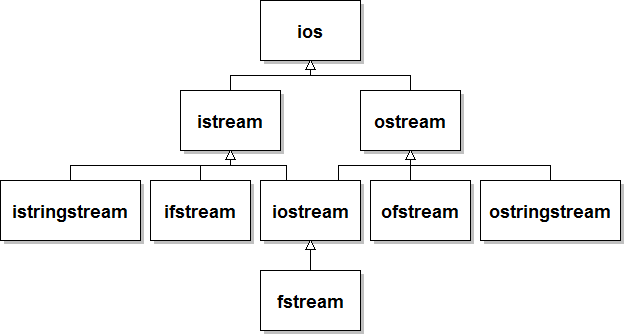

Class Hierarchy
You first met a class hierarchy when we looked at the related stream classes. The class ios represents a general stream type, used for any kind of I/O. The classes istream and ostream generalize the notions of input and output streams. The C++ file and string-stream classes fall naturally into their appropriate position.

Each class shown here is a derived class (subclass) of the class that appears above it in the hierarchy. istream and ostream are both derived classes of ios, while ios is a base class (superclass) of both istream and ostream. Similar relationships exist at all different levels of this diagram. For example, ifstream is derived from istream, and ostream is the base class of ofstream.
 This course content is offered under a
CC
Attribution Non-Commercial license. Content in this course
can be considered under this license unless otherwise noted.
This course content is offered under a
CC
Attribution Non-Commercial license. Content in this course
can be considered under this license unless otherwise noted.